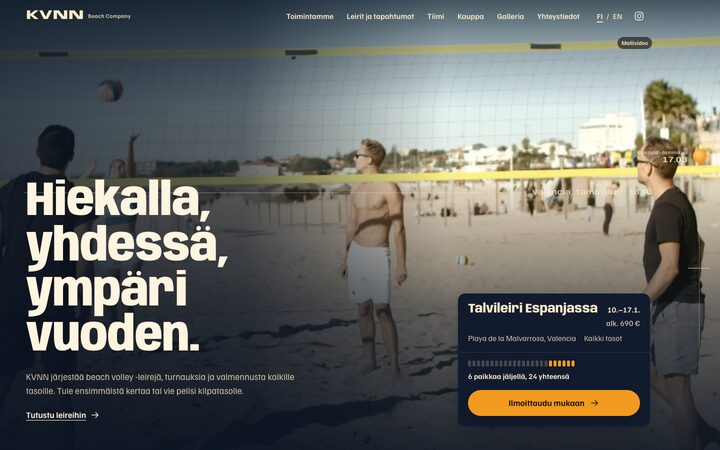
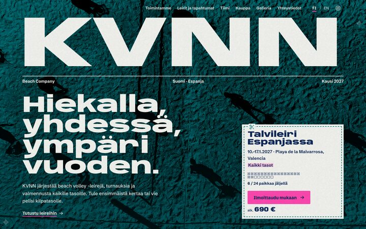
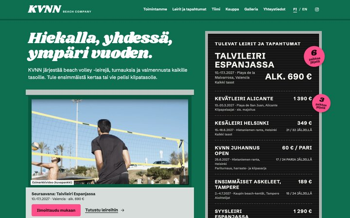

KVNN Beach Company: kolme suuntaa
Sama sisältö, kolme visuaalista tyyliä. Jokaisessa on etusivu, leirisivu ja galleria. Sivut seuraavat laitteen vaaleaa tai tummaa tilaa, ja englanninkielinen versio löytyy jokaisen sivun FI / EN -valinnasta.
-

-

-
